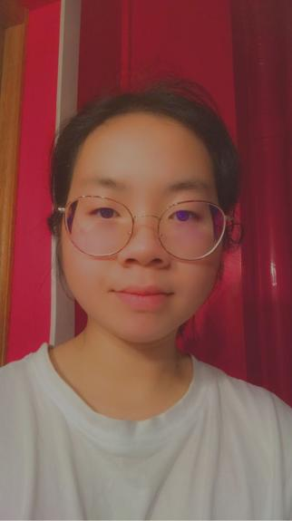

Qui suis-je ?

Bonjour, je m'appelle Hermione Tetard, j'ai 20 ans et je suis actuellemnt en deuxieme année
à l'IIM en coding et Digital Innovation.
Je suis d'origine chinoise et de nationalité française.
Je suis d'origine chinoise et de nationalité française.